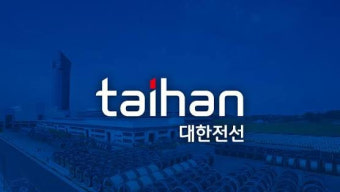

OPEN DART • FINANCIAL INTELLIGENCE
대한전선 재무 대시보드
사업·반기·분기 보고서 기반 핵심 수치와 재무비율

데이터 불러오는 중
매출액 · 영업이익 추이
최근 Annual 수익성
매출총이익률 · 영업이익률 · 순이익률
상세 재무 데이터
단위: 원(비율은 %). 분기/반기는 누적 공시 기준일 수 있습니다. OpenDART 공시 원문을 기반으로 하며 투자 권유 목적이 아닙니다.
국내 Peer firms
사업 중첩도, 지배관계, 상장 여부와 재무자료 접근성을 함께 고려한 비교기업 분류입니다.
| 분류 | 기업 | 대한전선과 겹치는 주요 사업 | 비교 시 유의사항 |
|---|---|---|---|
| Core peer | LS전선 ↗ | 초고압·전력·해저케이블 및 시공 솔루션 | 비상장사이므로 공개 재무자료 기반의 직접적인 가치평가 비교에는 제약이 있음 |
| Partial direct peer | 일진전기 ↗ | 초고압·중저압 전력케이블, 접속재 및 전력 인프라 | 변압기·차단기 등 중전기 사업 비중이 있어 케이블 기업 간 마진 비교 시 사업부 구성을 고려해야 함 |
| Secondary listed peer | 대원전선 ↗ | 전력·통신·자동차용 전선 | 범용·중저압 제품 비중과 기업 규모 차이가 커 보조 비교기업으로 활용 |
| Affiliate / operating benchmark | 가온전선 ↗ | 전력·통신·특수케이블 및 배전 솔루션 | LS전선 계열사이므로 독립적인 가치평가 비교보다 제품 믹스·운영지표 비교에 활용 |
| Specialist benchmark | 극동전선 (Lynxeo Korea) ↗ | 선박·해양, 철도, 자동차 및 산업용 특수 케이블 | 비상장 해외계열 법인으로 공개 재무자료가 제한적이므로 특수 케이블 사업 비교에 한정 |
활용 원칙: 상장사 재무·가치평가는 일진전기와 대원전선을 보조 비교군으로 활용합니다. LS전선·가온전선·극동전선은 제품 포트폴리오와 시장 노출도 비교에 사용합니다.